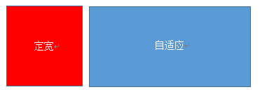
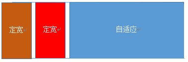
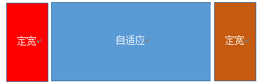
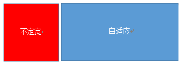
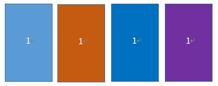
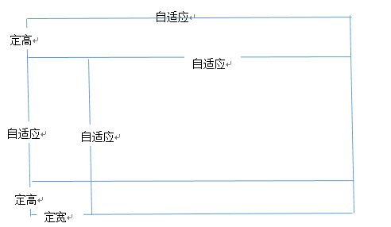

<!DOCTYPE html>
<html>
<head><meta name="generator" content="Hexo 3.8.0">
  <meta charset="utf-8">
  
  <title>web页面布局 | LIUXUEWEN&#39;S BLOG</title>
  <meta name="viewport" content="width=device-width, initial-scale=1, maximum-scale=1">
  
    <meta name="keywords" content="LIUXUEWEN,LIUXUEWEN's Blog">
  
  <meta name="description" content="一、划分一1、固定布局Fixed  在固定布局中，网页宽度须指定为一个像素值，一般为960px。  优点：  1）960px是最适合作为网格布局的宽度，因为可以整除3，4，5，6，8，10，12和15。  2）具有很强的稳定性与可控性。  缺点：  1）固定宽度必须考虑网站是否可以适用于不同的屏幕宽度。 2、流式布局Fluid  流布局使用的是百分比。  优点：  1）具有很强的可塑性和流动性。通">
<meta name="keywords" content="前端-CSS">
<meta property="og:type" content="article">
<meta property="og:title" content="web页面布局">
<meta property="og:url" content="http://liuxuewen-site.github.io/2018/02/15/CSS-bs-webLayout/index.html">
<meta property="og:site_name" content="LIUXUEWEN&#39;S BLOG">
<meta property="og:description" content="一、划分一1、固定布局Fixed  在固定布局中，网页宽度须指定为一个像素值，一般为960px。  优点：  1）960px是最适合作为网格布局的宽度，因为可以整除3，4，5，6，8，10，12和15。  2）具有很强的稳定性与可控性。  缺点：  1）固定宽度必须考虑网站是否可以适用于不同的屏幕宽度。 2、流式布局Fluid  流布局使用的是百分比。  优点：  1）具有很强的可塑性和流动性。通">
<meta property="og:locale" content="default">
<meta property="og:image" content="http://liuxuewen-site.github.io/2018/02/15/CSS-bs-webLayout/1.png">
<meta property="og:image" content="http://liuxuewen-site.github.io/2018/02/15/CSS-bs-webLayout/2.png">
<meta property="og:image" content="http://liuxuewen-site.github.io/2018/02/15/CSS-bs-webLayout/3.png">
<meta property="og:image" content="http://liuxuewen-site.github.io/2018/02/15/CSS-bs-webLayout/4.png">
<meta property="og:image" content="http://liuxuewen-site.github.io/2018/02/15/CSS-bs-webLayout/5.png">
<meta property="og:image" content="http://liuxuewen-site.github.io/2018/02/15/CSS-bs-webLayout/6.png">
<meta property="og:updated_time" content="2019-01-25T10:22:42.289Z">
<meta name="twitter:card" content="summary">
<meta name="twitter:title" content="web页面布局">
<meta name="twitter:description" content="一、划分一1、固定布局Fixed  在固定布局中，网页宽度须指定为一个像素值，一般为960px。  优点：  1）960px是最适合作为网格布局的宽度，因为可以整除3，4，5，6，8，10，12和15。  2）具有很强的稳定性与可控性。  缺点：  1）固定宽度必须考虑网站是否可以适用于不同的屏幕宽度。 2、流式布局Fluid  流布局使用的是百分比。  优点：  1）具有很强的可塑性和流动性。通">
<meta name="twitter:image" content="http://liuxuewen-site.github.io/2018/02/15/CSS-bs-webLayout/1.png">
  
  
    <link rel="icon" href="/favicon.ico">
  
  <link href="//cdn.bootcss.com/font-awesome/4.7.0/css/font-awesome.min.css" rel="stylesheet" type="text/css">
  <link rel="stylesheet" href="/css/style.css">
  <script src="/js/pace.min.js"></script>
  

  
  

</head>
</html>
<body>
  <div id="container">
      <header id="header">
    <div id="banner"></div>
    <div id="header-outer">
        <div id="header-menu" class="header-menu-pos animated">
            <div class="header-menu-container">
                <a href="/" class="left">
                    <span class="site-title">I AM LIUXUEWEN</span>
                </a>
                <nav id="header-menu-nav" class="right">
                    
                    <a href="/">
                        <i class="fa fa-home"></i>
                        <span>Home</span>
                    </a>
                    
                    <a href="/archives">
                        <i class="fa fa-archive"></i>
                        <span>Archives</span>
                    </a>
                    
                    <a href="/about">
                        <i class="fa fa-user"></i>
                        <span>About</span>
                    </a>
                    
                </nav>
                <a class="mobile-header-menu-button">
                    <i class="fa fa-bars"></i>
                </a>
            </div>
        </div>
        <div id="header-row">
            <div id="logo">
                <a href="/">
                    
                </a>
            </div>
            <div class="header-info">
                <div id="header-title">
                    
                    <h2>
                        I AM LIUXUEWEN
                    </h2>
                    
                </div>
                <div id="header-description">
                    
                    <h3>
                        一个 宅不住 的 IT程序员
                    </h3>
                    
                </div>
            </div>
            <nav class="header-nav">
                <div class="social">
                    
                        <a title="Github" target="_blank" href="//github.com/liuxuewen-site">
                            <i class="fa fa-github fa-2x"></i></a>
                    
                        <a title="Weibo" "="">
                            <i class="fa fa-weibo fa-2x"></i></a>
                    
                        <a title="Weixin" "="">
                            <i class="fa fa-weixin fa-2x"></i></a>
                    
                </div>
            </nav>
        </div>
    </div>
</header>
      <div class="outer">
        <section id="main" class="body-wrap"><article id="post-CSS-bs-webLayout" class="article article-type-post" itemscope="" itemprop="blogPost">
  <div class="article-inner">
    
      <header class="article-header">
        
  
    <h1 class="post-title" itemprop="name">
      web页面布局
    </h1>
    <div class="post-title-bar">
      <ul>
          
              <li>
                  <i class="fa fa-book"></i>
                  
                      <a href="/categories/前端/">前端</a>
                  
              </li>
          
        <li>
          <i class="fa fa-calendar"></i>  2018-02-15
        </li>
        <li>
          <i class="fa fa-eye"></i>
          <span id="busuanzi_value_page_pv"></span>
        </li>
      </ul>
    </div>
  

          
      </header>
    
    <div class="article-entry post-content" itemprop="articleBody">
      
            
            <h3 id="一、划分一"><a href="#一、划分一" class="headerlink" title="一、划分一"></a>一、划分一</h3><h4 id="1、固定布局Fixed"><a href="#1、固定布局Fixed" class="headerlink" title="1、固定布局Fixed"></a>1、固定布局Fixed</h4><p>  在固定布局中，网页宽度须指定为一个像素值，一般为960px。<br>  优点：<br>  1）960px是最适合作为网格布局的宽度，因为可以整除3，4，5，6，8，10，12和15。<br>  2）具有很强的稳定性与可控性。<br>  缺点：<br>  1）固定宽度必须考虑网站是否可以适用于不同的屏幕宽度。</p>
<h4 id="2、流式布局Fluid"><a href="#2、流式布局Fluid" class="headerlink" title="2、流式布局Fluid"></a>2、流式布局Fluid</h4><p>  流布局使用的是百分比。<br>  优点：<br>  1）具有很强的可塑性和流动性。通过设置百分比，不需要考虑设备尺寸或屏幕宽度大小，可以为每种情形找到一种可行的方案，因为你的设计尺寸将适应所有的设备尺寸。流式布局与媒体查询和优化样式技术密切相关。</p>
<h4 id="3、弹性布局Elastic"><a href="#3、弹性布局Elastic" class="headerlink" title="3、弹性布局Elastic"></a>3、弹性布局Elastic</h4><p>  弹性布局的大小单位不是像素或百分比，而是em或者rem。<br>  rem/em区别：rem是相对于html元素的font-size大小而言的，而em是相对于其父元素。<br>  优点：<br>  1）比像素或百分比更加灵活。<br>  2）支持浏览器的字体大小调整和缩放等的正常显示</p>
<h4 id="4、响应式布局"><a href="#4、响应式布局" class="headerlink" title="4、响应式布局"></a>4、响应式布局</h4><p>  使用@media媒体查询给不同尺寸和介质的设备切换不同的样式。<br>  优点：<br>  1）适应pc和移动端，如果足够耐心，效果完美。<br>  缺点：<br>  1）媒体查询是有限的，也就是可以枚举出来的，只能适应主流的宽高。<br>  2）要匹配足够多的屏幕大小，工作量不小，设计也需要多个版本。</p>
<h4 id="5、伸缩布局"><a href="#5、伸缩布局" class="headerlink" title="5、伸缩布局"></a>5、伸缩布局</h4><p>  使用css3 Flex系列属性进行相对布局。对于富媒体和复杂排版的支持非常大，但是存在兼容性问题。<br>  有flex、flexible、vhvm等</p>
<h3 id="二、划分二"><a href="#二、划分二" class="headerlink" title="二、划分二"></a>二、划分二</h3><h4 id="1、单列布局"><a href="#1、单列布局" class="headerlink" title="1、单列布局"></a>1、单列布局</h4><p>  注：下面各个实例中实现的是child元素的对齐操作，child元素的父容器是parent元素</p>
<p>  1）水平居中：</p>
<p>  a、使用inline-block 和 text-align实现<br>  <figure class="highlight bash"><table><tr><td class="gutter"><pre><span class="line">1</span><br><span class="line">2</span><br><span class="line">3</span><br><span class="line">4</span><br><span class="line">5</span><br><span class="line">6</span><br><span class="line">7</span><br><span class="line">8</span><br><span class="line">9</span><br></pre></td><td class="code"><pre><span class="line">.parent&#123;</span><br><span class="line">    text-align: center;</span><br><span class="line">&#125;</span><br><span class="line">.child&#123;</span><br><span class="line">    display: inline-block;</span><br><span class="line">&#125;</span><br><span class="line"></span><br><span class="line">优点：兼容性好；</span><br><span class="line">不足：需要同时设置子元素和父元素</span><br></pre></td></tr></table></figure></p>
<p>  b、使用margin:0 auto来实现<br>  <figure class="highlight plain"><table><tr><td class="gutter"><pre><span class="line">1</span><br><span class="line">2</span><br><span class="line">3</span><br><span class="line">4</span><br><span class="line">5</span><br><span class="line">6</span><br><span class="line">7</span><br></pre></td><td class="code"><pre><span class="line">.child&#123;</span><br><span class="line">    width:200px;</span><br><span class="line">    margin:0 auto;</span><br><span class="line">&#125;</span><br><span class="line"></span><br><span class="line">优点：兼容性好</span><br><span class="line">缺点: 需要指定宽度</span><br></pre></td></tr></table></figure></p>
<p>  c、使用table实现<br>  <figure class="highlight plain"><table><tr><td class="gutter"><pre><span class="line">1</span><br><span class="line">2</span><br><span class="line">3</span><br><span class="line">4</span><br><span class="line">5</span><br><span class="line">6</span><br><span class="line">7</span><br></pre></td><td class="code"><pre><span class="line">.child&#123;</span><br><span class="line">    display:table;</span><br><span class="line">    margin:0 auto;</span><br><span class="line">&#125;</span><br><span class="line"></span><br><span class="line">优点:只需要对自身进行设置</span><br><span class="line">不足:IE6,7需要调整结构</span><br></pre></td></tr></table></figure></p>
<p>  d、使用绝对定位实现<br>  <figure class="highlight plain"><table><tr><td class="gutter"><pre><span class="line">1</span><br><span class="line">2</span><br><span class="line">3</span><br><span class="line">4</span><br><span class="line">5</span><br><span class="line">6</span><br><span class="line">7</span><br><span class="line">8</span><br><span class="line">9</span><br><span class="line">10</span><br><span class="line">11</span><br></pre></td><td class="code"><pre><span class="line">.parent&#123;</span><br><span class="line">    position:relative;</span><br><span class="line">&#125;</span><br><span class="line">/*或者使用margin-left的负值为盒子宽度的一半也可以实现，不过这样就必须知道盒子的宽度，但兼容性好*/</span><br><span class="line">.child&#123;</span><br><span class="line">    position:absolute;</span><br><span class="line">    left:50%;</span><br><span class="line">    transform:translate(-50%);</span><br><span class="line">&#125;</span><br><span class="line"></span><br><span class="line">不足：兼容性差,IE9及以上可用</span><br></pre></td></tr></table></figure></p>
<p>  e、实用flex布局实现<br>  <figure class="highlight plain"><table><tr><td class="gutter"><pre><span class="line">1</span><br><span class="line">2</span><br><span class="line">3</span><br><span class="line">4</span><br><span class="line">5</span><br><span class="line">6</span><br><span class="line">7</span><br><span class="line">8</span><br><span class="line">9</span><br><span class="line">10</span><br><span class="line">11</span><br><span class="line">12</span><br><span class="line">13</span><br><span class="line">14</span><br></pre></td><td class="code"><pre><span class="line">/*第一种方法*/</span><br><span class="line">.parent&#123;</span><br><span class="line">    display:flex;</span><br><span class="line">    justify-content:center;</span><br><span class="line">&#125;</span><br><span class="line">/*第二种方法*/</span><br><span class="line">.parent&#123; </span><br><span class="line">    display:flex;</span><br><span class="line">&#125;</span><br><span class="line">.child&#123;</span><br><span class="line">    margin:0 auto;</span><br><span class="line">&#125;</span><br><span class="line"></span><br><span class="line">缺点：兼容性差，如果进行大面积的布局可能会影响效率</span><br></pre></td></tr></table></figure></p>
<p>  2）垂直居中：</p>
<p>  a、vertical-align<br>  <figure class="highlight plain"><table><tr><td class="gutter"><pre><span class="line">1</span><br><span class="line">2</span><br><span class="line">3</span><br><span class="line">4</span><br><span class="line">5</span><br><span class="line">6</span><br><span class="line">7</span><br><span class="line">8</span><br><span class="line">9</span><br><span class="line">10</span><br><span class="line">11</span><br><span class="line">12</span><br><span class="line">13</span><br><span class="line">14</span><br><span class="line">15</span><br><span class="line">16</span><br></pre></td><td class="code"><pre><span class="line">只有一个元素属于inline或inline-block（table-cell也可以理解为inline-block）水平，其身上的vertical-align属性才会起作用；</span><br><span class="line"></span><br><span class="line">在使用vertical-align的时候，由于对齐的基线是用行高的基线作为标记，故需要设置line-height或设置display:table-cell;</span><br><span class="line"></span><br><span class="line">/*第一种方法*/</span><br><span class="line">.parent&#123;</span><br><span class="line">    display:table-cell;</span><br><span class="line">    vertical-align:middle;</span><br><span class="line">    height:20px;</span><br><span class="line">&#125;</span><br><span class="line">/*第二种方法*/</span><br><span class="line">.parent&#123;</span><br><span class="line">    display:inline-block;</span><br><span class="line">    vertical-align:middle;</span><br><span class="line">    line-height:20px;</span><br><span class="line">&#125;</span><br></pre></td></tr></table></figure></p>
<p>  b、实用绝对定位<br>  <figure class="highlight plain"><table><tr><td class="gutter"><pre><span class="line">1</span><br><span class="line">2</span><br><span class="line">3</span><br><span class="line">4</span><br><span class="line">5</span><br><span class="line">6</span><br><span class="line">7</span><br><span class="line">8</span><br></pre></td><td class="code"><pre><span class="line">.parent&#123;</span><br><span class="line">    position:relative;</span><br><span class="line">&#125;</span><br><span class="line">.child&#123;</span><br><span class="line">    positon:absolute;</span><br><span class="line">    top:50%;</span><br><span class="line">    transform:translate(0,-50%);</span><br><span class="line">&#125;</span><br></pre></td></tr></table></figure></p>
<p>  c、实用flex实现<br>  <figure class="highlight plain"><table><tr><td class="gutter"><pre><span class="line">1</span><br><span class="line">2</span><br><span class="line">3</span><br><span class="line">4</span><br></pre></td><td class="code"><pre><span class="line">.parent&#123;</span><br><span class="line">    display:flex;</span><br><span class="line">    align-items:center;</span><br><span class="line">&#125;</span><br></pre></td></tr></table></figure></p>
<p>  3）水平垂直全部居中：</p>
<p>  a、利用vertical-align,text-align,inline-block实现<br>  <figure class="highlight bash"><table><tr><td class="gutter"><pre><span class="line">1</span><br><span class="line">2</span><br><span class="line">3</span><br><span class="line">4</span><br><span class="line">5</span><br><span class="line">6</span><br><span class="line">7</span><br><span class="line">8</span><br></pre></td><td class="code"><pre><span class="line">.parent&#123;</span><br><span class="line">    display:table-cell;</span><br><span class="line">    vertical-align:middle;</span><br><span class="line">    text-align:center;</span><br><span class="line">&#125;</span><br><span class="line">.child&#123;</span><br><span class="line">    display:inline-block;</span><br><span class="line">&#125;</span><br></pre></td></tr></table></figure></p>
<p>  b、利用绝对定位实现<br>  <figure class="highlight plain"><table><tr><td class="gutter"><pre><span class="line">1</span><br><span class="line">2</span><br><span class="line">3</span><br><span class="line">4</span><br><span class="line">5</span><br><span class="line">6</span><br><span class="line">7</span><br><span class="line">8</span><br><span class="line">9</span><br></pre></td><td class="code"><pre><span class="line">.parent&#123;</span><br><span class="line">    position:relative;</span><br><span class="line">&#125;</span><br><span class="line">.child&#123;</span><br><span class="line">    position:absolute;</span><br><span class="line">    top:50%;</span><br><span class="line">    left:50%;</span><br><span class="line">    transform:translate(-50%,-50%);</span><br><span class="line">&#125;</span><br></pre></td></tr></table></figure></p>
<p>  c、利用flex实现<br>  <figure class="highlight plain"><table><tr><td class="gutter"><pre><span class="line">1</span><br><span class="line">2</span><br><span class="line">3</span><br><span class="line">4</span><br><span class="line">5</span><br></pre></td><td class="code"><pre><span class="line">.parent&#123;</span><br><span class="line">    display:flex;</span><br><span class="line">    justify-content:center;</span><br><span class="line">    align-items:center;</span><br><span class="line">&#125;</span><br></pre></td></tr></table></figure></p>
<h4 id="2、多列布局"><a href="#2、多列布局" class="headerlink" title="2、多列布局"></a>2、多列布局</h4><p>  1）左列定宽，右列自适应：<br>  </p>
<p>  a、利用float+margin实现<br>  <figure class="highlight bash"><table><tr><td class="gutter"><pre><span class="line">1</span><br><span class="line">2</span><br><span class="line">3</span><br><span class="line">4</span><br><span class="line">5</span><br><span class="line">6</span><br><span class="line">7</span><br><span class="line">8</span><br><span class="line">9</span><br></pre></td><td class="code"><pre><span class="line">.left&#123;</span><br><span class="line">    <span class="built_in">float</span>:left;</span><br><span class="line">    width:100px;</span><br><span class="line">&#125;</span><br><span class="line">.right&#123;</span><br><span class="line">    margin-left:100px;</span><br><span class="line">&#125;</span><br><span class="line"></span><br><span class="line">注：IE6会有3px的bug</span><br></pre></td></tr></table></figure></p>
<p>  b、利用float+margin(fix)实现<br>  <figure class="highlight bash"><table><tr><td class="gutter"><pre><span class="line">1</span><br><span class="line">2</span><br><span class="line">3</span><br><span class="line">4</span><br><span class="line">5</span><br><span class="line">6</span><br><span class="line">7</span><br><span class="line">8</span><br><span class="line">9</span><br><span class="line">10</span><br><span class="line">11</span><br><span class="line">12</span><br><span class="line">13</span><br><span class="line">14</span><br><span class="line">15</span><br><span class="line">16</span><br><span class="line">17</span><br><span class="line">18</span><br><span class="line">19</span><br></pre></td><td class="code"><pre><span class="line">&lt;div class=<span class="string">"parent"</span>&gt;</span><br><span class="line">    &lt;div class=<span class="string">"left"</span>&gt;&lt;/div&gt;</span><br><span class="line">    &lt;div class=<span class="string">"right-fix"</span>&gt;</span><br><span class="line">        &lt;div class=<span class="string">"right"</span>&gt;&lt;/div&gt;</span><br><span class="line">    &lt;/div&gt;</span><br><span class="line">&lt;/div&gt;</span><br><span class="line"></span><br><span class="line">.left&#123;</span><br><span class="line">    width:100px;</span><br><span class="line">    <span class="built_in">float</span>:left;</span><br><span class="line">&#125;</span><br><span class="line">.right-fix&#123;</span><br><span class="line">    width:100%;</span><br><span class="line">    margin-left:-100px;</span><br><span class="line">    <span class="built_in">float</span>:right;</span><br><span class="line">&#125;</span><br><span class="line">.right&#123;</span><br><span class="line">    margin-left:100px;</span><br><span class="line">&#125;</span><br></pre></td></tr></table></figure></p>
<p>  c、使用float+overflow实现<br>  <figure class="highlight bash"><table><tr><td class="gutter"><pre><span class="line">1</span><br><span class="line">2</span><br><span class="line">3</span><br><span class="line">4</span><br><span class="line">5</span><br><span class="line">6</span><br><span class="line">7</span><br><span class="line">8</span><br><span class="line">9</span><br><span class="line">10</span><br><span class="line">11</span><br><span class="line">12</span><br><span class="line">13</span><br><span class="line">14</span><br><span class="line">15</span><br><span class="line">16</span><br><span class="line">17</span><br><span class="line">18</span><br><span class="line">19</span><br><span class="line">20</span><br><span class="line">21</span><br><span class="line">22</span><br><span class="line">23</span><br><span class="line">24</span><br><span class="line">25</span><br></pre></td><td class="code"><pre><span class="line">.left&#123;</span><br><span class="line">    width:100px;</span><br><span class="line">    <span class="built_in">float</span>:left;</span><br><span class="line">&#125;</span><br><span class="line">.right&#123;</span><br><span class="line">    overflow:hidden;</span><br><span class="line">&#125;</span><br><span class="line">右侧利用overflow:hidden，触发bfc模式，浮动无法影响，隔离其他元素，IE6不支持，</span><br><span class="line">左侧left设置margin-left当作left与right之间的边距。</span><br><span class="line"></span><br><span class="line">如果我们需要将两列设置为等高，可以用下述方法将“背景”设置为等高，其实并不是内容的等高</span><br><span class="line">.left&#123;</span><br><span class="line">    width:100px;</span><br><span class="line">    <span class="built_in">float</span>:left;</span><br><span class="line">&#125;</span><br><span class="line">.right&#123;</span><br><span class="line">    overflow:hidden;</span><br><span class="line">&#125;</span><br><span class="line">.parent&#123;</span><br><span class="line">    overflow:hidden;</span><br><span class="line">&#125;</span><br><span class="line">.left,.right&#123;</span><br><span class="line">    padding-bottom:9999px;</span><br><span class="line">    margin-bottom:-9999px;</span><br><span class="line">&#125;</span><br></pre></td></tr></table></figure></p>
<p>  d、使用table实现<br>  <figure class="highlight plain"><table><tr><td class="gutter"><pre><span class="line">1</span><br><span class="line">2</span><br><span class="line">3</span><br><span class="line">4</span><br><span class="line">5</span><br><span class="line">6</span><br><span class="line">7</span><br><span class="line">8</span><br><span class="line">9</span><br><span class="line">10</span><br><span class="line">11</span><br></pre></td><td class="code"><pre><span class="line">.parent&#123;</span><br><span class="line">    display:table;</span><br><span class="line">    table-layout:fixed;</span><br><span class="line">    width:100%;</span><br><span class="line">&#125;</span><br><span class="line">.left&#123;</span><br><span class="line">    width:100px;</span><br><span class="line">&#125;</span><br><span class="line">.right,.left&#123;</span><br><span class="line">    display:table-cell;</span><br><span class="line">&#125;</span><br></pre></td></tr></table></figure></p>
<p>  e、实用flex实现<br>  <figure class="highlight plain"><table><tr><td class="gutter"><pre><span class="line">1</span><br><span class="line">2</span><br><span class="line">3</span><br><span class="line">4</span><br><span class="line">5</span><br><span class="line">6</span><br></pre></td><td class="code"><pre><span class="line">.parent&#123;display:flex;&#125;</span><br><span class="line">.left&#123;width:100px;&#125;</span><br><span class="line">.right&#123;flex:1;&#125;</span><br><span class="line"></span><br><span class="line">利用右侧容器的flex:1，均分了剩余的宽度，也实现了同样的效果。</span><br><span class="line">而align-items 默认值为stretch，故二者高度相等</span><br></pre></td></tr></table></figure></p>
<p>  2）右列定宽，左列自适应：</p>
<p>  a、实用float+margin实现<br>  <figure class="highlight bash"><table><tr><td class="gutter"><pre><span class="line">1</span><br><span class="line">2</span><br><span class="line">3</span><br><span class="line">4</span><br><span class="line">5</span><br><span class="line">6</span><br><span class="line">7</span><br><span class="line">8</span><br><span class="line">9</span><br><span class="line">10</span><br><span class="line">11</span><br><span class="line">12</span><br><span class="line">13</span><br><span class="line">14</span><br><span class="line">15</span><br><span class="line">16</span><br></pre></td><td class="code"><pre><span class="line">.parent&#123;</span><br><span class="line">    background:red;</span><br><span class="line">    height:100px;</span><br><span class="line">    margin:0 auto;</span><br><span class="line">&#125;</span><br><span class="line">.left&#123;</span><br><span class="line">    background:green;</span><br><span class="line">    margin-right:-100px;</span><br><span class="line">    width:100%;</span><br><span class="line">    <span class="built_in">float</span>:left;</span><br><span class="line">&#125;</span><br><span class="line">.right&#123;</span><br><span class="line">    background:blue;</span><br><span class="line">    <span class="built_in">float</span>:right;</span><br><span class="line">    width:100px;</span><br><span class="line">&#125;</span><br></pre></td></tr></table></figure></p>
<p>  b、使用table实现<br>  <figure class="highlight plain"><table><tr><td class="gutter"><pre><span class="line">1</span><br><span class="line">2</span><br><span class="line">3</span><br><span class="line">4</span><br><span class="line">5</span><br><span class="line">6</span><br><span class="line">7</span><br><span class="line">8</span><br><span class="line">9</span><br><span class="line">10</span><br><span class="line">11</span><br><span class="line">12</span><br></pre></td><td class="code"><pre><span class="line">.parent&#123;</span><br><span class="line">    display:table;</span><br><span class="line">    table-layout:fixed;</span><br><span class="line">    width:100%;</span><br><span class="line">&#125;</span><br><span class="line">.left&#123;</span><br><span class="line">    display:table-cell;</span><br><span class="line">&#125;</span><br><span class="line">.right&#123;</span><br><span class="line">    width:100px;</span><br><span class="line">    display:table-cell;</span><br><span class="line">&#125;</span><br></pre></td></tr></table></figure></p>
<p>  c、实用flex实现<br>  <figure class="highlight plain"><table><tr><td class="gutter"><pre><span class="line">1</span><br><span class="line">2</span><br><span class="line">3</span><br><span class="line">4</span><br><span class="line">5</span><br><span class="line">6</span><br><span class="line">7</span><br><span class="line">8</span><br><span class="line">9</span><br></pre></td><td class="code"><pre><span class="line">.parent&#123;</span><br><span class="line">    display:flex;</span><br><span class="line">&#125;</span><br><span class="line">.left&#123;</span><br><span class="line">    flex:1;</span><br><span class="line">&#125;</span><br><span class="line">.right&#123;</span><br><span class="line">    width:100px;</span><br><span class="line">&#125;</span><br></pre></td></tr></table></figure></p>
<p>  3）两列定宽，一列自适应:<br>  </p>
<p>  a、利用float+margin实现<br>  <figure class="highlight bash"><table><tr><td class="gutter"><pre><span class="line">1</span><br><span class="line">2</span><br><span class="line">3</span><br><span class="line">4</span><br><span class="line">5</span><br><span class="line">6</span><br><span class="line">7</span><br></pre></td><td class="code"><pre><span class="line">.left,.center&#123;</span><br><span class="line">    <span class="built_in">float</span>:left;</span><br><span class="line">    width:200px;</span><br><span class="line">&#125;</span><br><span class="line">.right&#123;</span><br><span class="line">    margin-left:400px;</span><br><span class="line">&#125;</span><br></pre></td></tr></table></figure></p>
<p>  b、利用table实现<br>  <figure class="highlight plain"><table><tr><td class="gutter"><pre><span class="line">1</span><br><span class="line">2</span><br><span class="line">3</span><br><span class="line">4</span><br><span class="line">5</span><br><span class="line">6</span><br><span class="line">7</span><br><span class="line">8</span><br><span class="line">9</span><br><span class="line">10</span><br><span class="line">11</span><br></pre></td><td class="code"><pre><span class="line">.parent&#123;</span><br><span class="line">    display:table;</span><br><span class="line">    table-layout:fixed;</span><br><span class="line">    width:100%;</span><br><span class="line">&#125;</span><br><span class="line">.left,.center,.right&#123;</span><br><span class="line">    display:table-cell;</span><br><span class="line">&#125;</span><br><span class="line">.left,.center&#123;</span><br><span class="line">    width:200px;</span><br><span class="line">&#125;</span><br></pre></td></tr></table></figure></p>
<p>  c、利用flex实现<br>  <figure class="highlight plain"><table><tr><td class="gutter"><pre><span class="line">1</span><br><span class="line">2</span><br><span class="line">3</span><br></pre></td><td class="code"><pre><span class="line">.parent&#123;display:flex;&#125;</span><br><span class="line">.left,.center&#123;width:100px;&#125;</span><br><span class="line">.right&#123;flex:1&#125;</span><br></pre></td></tr></table></figure></p>
<p>  4）两侧定宽，中栏自适应:<br>  </p>
<p>  a、利用float+margin实现<br>  <figure class="highlight bash"><table><tr><td class="gutter"><pre><span class="line">1</span><br><span class="line">2</span><br><span class="line">3</span><br><span class="line">4</span><br><span class="line">5</span><br><span class="line">6</span><br><span class="line">7</span><br><span class="line">8</span><br><span class="line">9</span><br><span class="line">10</span><br><span class="line">11</span><br><span class="line">12</span><br><span class="line">13</span><br></pre></td><td class="code"><pre><span class="line">.left&#123;</span><br><span class="line">    width：100px;</span><br><span class="line">    <span class="built_in">float</span>:left;</span><br><span class="line">&#125;</span><br><span class="line">.center&#123;</span><br><span class="line">    <span class="built_in">float</span>:left;</span><br><span class="line">    width:100%;</span><br><span class="line">    margin-right:-200px;</span><br><span class="line">&#125;</span><br><span class="line">.right&#123;</span><br><span class="line">    width:100px;</span><br><span class="line">    <span class="built_in">float</span>:right;</span><br><span class="line">&#125;</span><br></pre></td></tr></table></figure></p>
<p>  b、利用table实现<br>  <figure class="highlight plain"><table><tr><td class="gutter"><pre><span class="line">1</span><br><span class="line">2</span><br><span class="line">3</span><br><span class="line">4</span><br><span class="line">5</span><br><span class="line">6</span><br><span class="line">7</span><br><span class="line">8</span><br><span class="line">9</span><br><span class="line">10</span><br><span class="line">11</span><br><span class="line">12</span><br><span class="line">13</span><br><span class="line">14</span><br></pre></td><td class="code"><pre><span class="line">.parent&#123;</span><br><span class="line">    width:100%;</span><br><span class="line">    display:table;</span><br><span class="line">    table-layout:fixed</span><br><span class="line">&#125;</span><br><span class="line">.left,.center,.right&#123;</span><br><span class="line">    display:table-cell;</span><br><span class="line">&#125;</span><br><span class="line">.left&#123;</span><br><span class="line">    width:100px;</span><br><span class="line">&#125;</span><br><span class="line">.right&#123;</span><br><span class="line">    width:100px;</span><br><span class="line">&#125;</span><br></pre></td></tr></table></figure></p>
<p>  c、利用flex实现<br>  <figure class="highlight plain"><table><tr><td class="gutter"><pre><span class="line">1</span><br><span class="line">2</span><br><span class="line">3</span><br><span class="line">4</span><br></pre></td><td class="code"><pre><span class="line">.parent&#123;display:flex;&#125;</span><br><span class="line">.left&#123;width:100px;&#125;</span><br><span class="line">.center&#123;flex:1;&#125;</span><br><span class="line">.right&#123;width:100px;&#125;</span><br></pre></td></tr></table></figure></p>
<p>  5）一列不定宽，一列自适应:<br>  </p>
<p>  a、利用float+overflow实现<br>  <figure class="highlight plain"><table><tr><td class="gutter"><pre><span class="line">1</span><br><span class="line">2</span><br></pre></td><td class="code"><pre><span class="line">.left&#123;float:left;&#125;</span><br><span class="line">.right&#123;overflow:hidden;&#125;</span><br></pre></td></tr></table></figure></p>
<p>  b、利用table实现<br>  <figure class="highlight plain"><table><tr><td class="gutter"><pre><span class="line">1</span><br><span class="line">2</span><br><span class="line">3</span><br><span class="line">4</span><br><span class="line">5</span><br><span class="line">6</span><br><span class="line">7</span><br><span class="line">8</span><br><span class="line">9</span><br><span class="line">10</span><br><span class="line">11</span><br></pre></td><td class="code"><pre><span class="line">.parent&#123;</span><br><span class="line">    display:table;</span><br><span class="line">    table-layout:fixed;</span><br><span class="line">    width:100%;</span><br><span class="line">&#125;</span><br><span class="line">.left&#123;</span><br><span class="line">    width:0.1%;</span><br><span class="line">&#125;</span><br><span class="line">.left,.right&#123;</span><br><span class="line">    display:table-cell;</span><br><span class="line">&#125;</span><br></pre></td></tr></table></figure></p>
<p>  c、利用flex实现<br>  <figure class="highlight plain"><table><tr><td class="gutter"><pre><span class="line">1</span><br><span class="line">2</span><br></pre></td><td class="code"><pre><span class="line">.parent&#123;display:flex;&#125;</span><br><span class="line">.right&#123;flex:1;&#125;</span><br></pre></td></tr></table></figure></p>
<p>  6）多列等分布局:<br>  <br>  <figure class="highlight bash"><table><tr><td class="gutter"><pre><span class="line">1</span><br><span class="line">2</span><br><span class="line">3</span><br><span class="line">4</span><br><span class="line">5</span><br><span class="line">6</span><br><span class="line">7</span><br></pre></td><td class="code"><pre><span class="line">html结构</span><br><span class="line">&lt;div class=<span class="string">"parent"</span>&gt;</span><br><span class="line">    &lt;div class=<span class="string">"column"</span>&gt;1&lt;/div&gt;</span><br><span class="line">    &lt;div class=<span class="string">"column"</span>&gt;1&lt;/div&gt;</span><br><span class="line">    &lt;div class=<span class="string">"column"</span>&gt;1&lt;/div&gt;</span><br><span class="line">    &lt;div class=<span class="string">"column"</span>&gt;1&lt;/div&gt;</span><br><span class="line">&lt;/div&gt;</span><br></pre></td></tr></table></figure></p>
<p>  a、实用float实现<br>  <figure class="highlight plain"><table><tr><td class="gutter"><pre><span class="line">1</span><br><span class="line">2</span><br><span class="line">3</span><br><span class="line">4</span><br><span class="line">5</span><br><span class="line">6</span><br><span class="line">7</span><br><span class="line">8</span><br><span class="line">9</span><br></pre></td><td class="code"><pre><span class="line">.parent&#123;</span><br><span class="line">    margin-left:-20px        /*假设列之间的间距为20px*/</span><br><span class="line">&#125;</span><br><span class="line">.column&#123;</span><br><span class="line">    float:left;</span><br><span class="line">    width:25%;</span><br><span class="line">    padding-left:20px;</span><br><span class="line">    box-sizing:border-box;</span><br><span class="line">&#125;</span><br></pre></td></tr></table></figure></p>
<p>  b、利用table实现<br>  <figure class="highlight plain"><table><tr><td class="gutter"><pre><span class="line">1</span><br><span class="line">2</span><br><span class="line">3</span><br><span class="line">4</span><br><span class="line">5</span><br><span class="line">6</span><br><span class="line">7</span><br><span class="line">8</span><br><span class="line">9</span><br><span class="line">10</span><br><span class="line">11</span><br><span class="line">12</span><br></pre></td><td class="code"><pre><span class="line">.parent-fix&#123;</span><br><span class="line">    margin-left:-20px;</span><br><span class="line">&#125;</span><br><span class="line">.parent&#123;</span><br><span class="line">    display:table;</span><br><span class="line">    table-layout:fixed;</span><br><span class="line">    width:100%;</span><br><span class="line">&#125;</span><br><span class="line">.column&#123;</span><br><span class="line">    display:table-cell;</span><br><span class="line">    padding-left:20px;</span><br><span class="line">&#125;</span><br></pre></td></tr></table></figure></p>
<p>  c、利用flex实现<br>  <figure class="highlight plain"><table><tr><td class="gutter"><pre><span class="line">1</span><br><span class="line">2</span><br><span class="line">3</span><br></pre></td><td class="code"><pre><span class="line">.parent&#123;display:flex;&#125;</span><br><span class="line">.column&#123;flex:1;&#125;</span><br><span class="line">.column+.column&#123;margin-left:20px;&#125;</span><br></pre></td></tr></table></figure></p>
<p>  7）九宫格布局:</p>
<p>  a、使用table实现<br>  <figure class="highlight plain"><table><tr><td class="gutter"><pre><span class="line">1</span><br><span class="line">2</span><br><span class="line">3</span><br><span class="line">4</span><br><span class="line">5</span><br><span class="line">6</span><br><span class="line">7</span><br><span class="line">8</span><br><span class="line">9</span><br></pre></td><td class="code"><pre><span class="line">&lt;div class=&quot;parent&quot;&gt;</span><br><span class="line">    &lt;div class=&quot;row&quot;&gt;&lt;div class=&quot;item&quot;&gt;&lt;/div&gt;&lt;div class=&quot;item&quot;&gt;&lt;/div&gt;&lt;div class=&quot;item&quot;&gt;&lt;/div&gt;&lt;/div&gt;</span><br><span class="line">    &lt;div class=&quot;row&quot;&gt;&lt;div class=&quot;item&quot;&gt;&lt;/div&gt;&lt;div class=&quot;item&quot;&gt;&lt;/div&gt;&lt;div class=&quot;item&quot;&gt;&lt;/div&gt;&lt;/div&gt;</span><br><span class="line">    &lt;div class=&quot;row&quot;&gt;&lt;div class=&quot;item&quot;&gt;&lt;/div&gt;&lt;div class=&quot;item&quot;&gt;&lt;/div&gt;&lt;div class=&quot;item&quot;&gt;&lt;/div&gt;&lt;/div&gt;</span><br><span class="line">&lt;/div&gt;</span><br><span class="line"></span><br><span class="line">.parent&#123;display:table;table-layout:fixed;width:100%;&#125;</span><br><span class="line">.row&#123;display:table-row;&#125;</span><br><span class="line">.item&#123;display:table-cell;width:33.3%;height:200px;&#125;</span><br></pre></td></tr></table></figure></p>
<p>  b、实用flex实现<br>  <figure class="highlight plain"><table><tr><td class="gutter"><pre><span class="line">1</span><br><span class="line">2</span><br><span class="line">3</span><br><span class="line">4</span><br><span class="line">5</span><br><span class="line">6</span><br><span class="line">7</span><br><span class="line">8</span><br><span class="line">9</span><br></pre></td><td class="code"><pre><span class="line">&lt;div class=&quot;parent&quot;&gt;</span><br><span class="line">&lt;div class=&quot;row&quot;&gt;&lt;div class=&quot;item&quot;&gt;&lt;/div&gt;&lt;div class=&quot;item&quot;&gt;&lt;/div&gt;&lt;div class=&quot;item&quot;&gt;&lt;/div&gt;&lt;/div&gt;</span><br><span class="line">&lt;div class=&quot;row&quot;&gt;&lt;div class=&quot;item&quot;&gt;&lt;/div&gt;&lt;div class=&quot;item&quot;&gt;&lt;/div&gt;&lt;div class=&quot;item&quot;&gt;&lt;/div&gt;&lt;/div&gt;</span><br><span class="line">&lt;div class=&quot;row&quot;&gt;&lt;div class=&quot;item&quot;&gt;&lt;/div&gt;&lt;div class=&quot;item&quot;&gt;&lt;/div&gt;&lt;div class=&quot;item&quot;&gt;&lt;/div&gt;&lt;/div&gt;</span><br><span class="line">&lt;/div&gt;</span><br><span class="line"></span><br><span class="line">.parent&#123;display:flex;flex-direction:column;&#125;</span><br><span class="line">.row&#123;height:100px;display:flex;&#125;</span><br><span class="line">.item&#123;width:100px;background:red;&#125;</span><br></pre></td></tr></table></figure></p>
<h4 id="3、全屏布局"><a href="#3、全屏布局" class="headerlink" title="3、全屏布局"></a>3、全屏布局</h4><p>  </p>
<p>  a、利用绝对定位实现<br>  <figure class="highlight plain"><table><tr><td class="gutter"><pre><span class="line">1</span><br><span class="line">2</span><br><span class="line">3</span><br><span class="line">4</span><br><span class="line">5</span><br><span class="line">6</span><br><span class="line">7</span><br><span class="line">8</span><br><span class="line">9</span><br><span class="line">10</span><br><span class="line">11</span><br><span class="line">12</span><br></pre></td><td class="code"><pre><span class="line">&lt;div class=&quot;parent&quot;&gt;</span><br><span class="line">    &lt;div class=&quot;top&quot;&gt;top&lt;/div&gt;</span><br><span class="line">    &lt;div class=&quot;left&quot;&gt;left&lt;/div&gt;</span><br><span class="line">    &lt;div class=&quot;right&quot;&gt;right&lt;/div&gt;</span><br><span class="line">    &lt;div class=&quot;bottom&quot;&gt;bottom&lt;/div&gt;</span><br><span class="line">&lt;/div&gt;</span><br><span class="line"></span><br><span class="line">html,body,parent&#123;height:100%;overflow:hidden;&#125;</span><br><span class="line">.top&#123;position:absolute:top:0;left:0;right:0;height:100px;&#125;</span><br><span class="line">.left&#123;position:absolute;top:100px;left:0;bottom:50px;width:200px;&#125;</span><br><span class="line">.right&#123;position:absolute;overflow:auto;left:200px;right:0;top:100px;bottom:50px;&#125;</span><br><span class="line">.bottom&#123;position:absolute;left:0;right:0;bottom:0;height:50px;&#125;</span><br></pre></td></tr></table></figure></p>
<p>  b、利用flex实现<br>  <figure class="highlight plain"><table><tr><td class="gutter"><pre><span class="line">1</span><br><span class="line">2</span><br><span class="line">3</span><br><span class="line">4</span><br><span class="line">5</span><br><span class="line">6</span><br><span class="line">7</span><br><span class="line">8</span><br><span class="line">9</span><br><span class="line">10</span><br><span class="line">11</span><br><span class="line">12</span><br><span class="line">13</span><br><span class="line">14</span><br><span class="line">15</span><br></pre></td><td class="code"><pre><span class="line">&lt;div class=&quot;parent&quot;&gt;</span><br><span class="line"> &lt;div class=&quot;top&quot;&gt;top&lt;/div&gt;</span><br><span class="line"> &lt;div class=&quot;middle&quot;&gt;</span><br><span class="line">  &lt;div class=&quot;left&quot;&gt;left&lt;/div&gt;</span><br><span class="line">  &lt;div class=&quot;right&quot;&gt;right&lt;/div&gt;</span><br><span class="line"> &lt;/div&gt;</span><br><span class="line"> &lt;div class=&quot;bottom&quot;&gt;bottom&lt;/div&gt;</span><br><span class="line">&lt;/div&gt;</span><br><span class="line"></span><br><span class="line">.parent&#123;display:flex;flex-direction:column;&#125;</span><br><span class="line">.top&#123;height:100px;&#125;</span><br><span class="line">.bottom&#123;height:50px;&#125;</span><br><span class="line">.middle&#123;flex:1;display:flex;&#125;</span><br><span class="line">.left&#123;width:200px;&#125;</span><br><span class="line">.right&#123;flex:1;overflow:auto;&#125;</span><br></pre></td></tr></table></figure></p>
<h4 id="4、响应式布局-1"><a href="#4、响应式布局-1" class="headerlink" title="4、响应式布局"></a>4、响应式布局</h4><p>  a、meta标签的实用<br>  设置布局宽度等于设备宽度，布局viewport等于度量viewport<br>  <figure class="highlight bash"><table><tr><td class="gutter"><pre><span class="line">1</span><br></pre></td><td class="code"><pre><span class="line">&lt;meta name=<span class="string">"viewport"</span> content=<span class="string">"width=device-width,initial-scale=1"</span>&gt;</span><br></pre></td></tr></table></figure></p>
<p>  b、媒体查询<br>  <figure class="highlight bash"><table><tr><td class="gutter"><pre><span class="line">1</span><br><span class="line">2</span><br><span class="line">3</span><br></pre></td><td class="code"><pre><span class="line">@media screen and (max-width:960px)&#123;....&#125;</span><br><span class="line">或者：</span><br><span class="line">&lt;link rel=<span class="string">"stylesheet"</span> media=<span class="string">"screen and (max-width:960px)"</span> href=<span class="string">'xxx.css'</span> /&gt;</span><br></pre></td></tr></table></figure></p>
<p>  标注：</p>
<ul>
<li>参考资料1：<a href="http://blog.csdn.net/lyyo_cd/article/details/73329068" target="_blank" rel="noopener">http://blog.csdn.net/lyyo_cd/article/details/73329068</a> </li>
<li>参考资料2：<a href="https://www.cnblogs.com/axl234/p/5078182.html" target="_blank" rel="noopener">https://www.cnblogs.com/axl234/p/5078182.html</a></li>
</ul>

            <div class="post-copyright">
    <div class="content">
        <p>最后更新： 2019年01月25日 18:22</p>
        <p>原始链接： <a class="post-url" href="/2018/02/15/CSS-bs-webLayout/" title="web页面布局">http://liuxuewen-site.github.io/2018/02/15/CSS-bs-webLayout/</a></p>
        <footer>
            <a href="http://liuxuewen-site.github.io">
                
                liuxuewen
            </a>
        </footer>
    </div>
</div>

      
        
            
<div class="page-reward">
    <a id="rewardBtn" href="javascript:;">赏</a>
</div>

<div id="reward" class="post-modal reward-lay">
    <a class="close" href="javascript:;" id="reward-close">×</a>
    <span class="reward-title">
        <i class="icon icon-quote-left"></i>
        请我吃糖~
        <i class="icon icon-quote-right"></i>
    </span>
    <div class="reward-content">
        
        <div class="reward-code">
            
        </div>
        <div class="reward-select">
            
            <label class="reward-select-item checked" data-id="wechat" data-wechat="/images/wechat_code.jpg">
                
            </label>
            
            
            <label class="reward-select-item" data-id="alipay" data-alipay="/images/alipay_code.jpg">
                
            </label>
            
        </div>
    </div>
</div>


        
    </div>
    <footer class="article-footer">
        
        
<div class="post-share">
    <a href="javascript:;" id="share-sub" class="post-share-fab">
        <i class="fa fa-share-alt"></i>
    </a>
    <div class="post-share-list" id="share-list">
        <ul class="share-icons">
          <li>
            <a class="weibo share-sns" target="_blank" href="http://service.weibo.com/share/share.php?url=http://liuxuewen-site.github.io/2018/02/15/CSS-bs-webLayout/&title=《web页面布局》 — LIUXUEWEN'S BLOG&pic=http://liuxuewen-site.github.ioimages/logo.png" data-title="微博">
              <i class="fa fa-weibo"></i>
            </a>
          </li>
          <li>
            <a class="weixin share-sns" id="wxFab" href="javascript:;" data-title="微信">
              <i class="fa fa-weixin"></i>
            </a>
          </li>
          <li>
            <a class="qq share-sns" target="_blank" href="http://connect.qq.com/widget/shareqq/index.html?url=http://liuxuewen-site.github.io/2018/02/15/CSS-bs-webLayout/&title=《web页面布局》 — LIUXUEWEN'S BLOG&source=" data-title="QQ">
              <i class="fa fa-qq"></i>
            </a>
          </li>
          <li>
            <a class="facebook share-sns" target="_blank" href="https://www.facebook.com/sharer/sharer.php?u=http://liuxuewen-site.github.io/2018/02/15/CSS-bs-webLayout/" data-title="Facebook">
              <i class="fa fa-facebook"></i>
            </a>
          </li>
          <li>
            <a class="twitter share-sns" target="_blank" href="https://twitter.com/intent/tweet?text=《web页面布局》 — LIUXUEWEN'S BLOG&url=http://liuxuewen-site.github.io/2018/02/15/CSS-bs-webLayout/&via=http://liuxuewen-site.github.io" data-title="Twitter">
              <i class="fa fa-twitter"></i>
            </a>
          </li>
          <li>
            <a class="google share-sns" target="_blank" href="https://plus.google.com/share?url=http://liuxuewen-site.github.io/2018/02/15/CSS-bs-webLayout/" data-title="Google+">
              <i class="fa fa-google-plus"></i>
            </a>
          </li>
        </ul>
     </div>
</div>
<div class="post-modal wx-share" id="wxShare">
    <a class="close" href="javascript:;" id="wxShare-close">×</a>
    <p>扫一扫，分享到微信</p>
    
</div>

<div class="mask"></div>

        
        <ul class="article-footer-menu">
            
            
  <li class="article-footer-tags">
    <i class="fa fa-tags"></i>
      
    <a href="/tags/前端-CSS/" class="color2">前端-CSS</a>
      
  </li>

        </ul>
        
    </footer>
  </div>
</article>


    <aside class="post-toc-pos post-toc-top" id="post-toc">
        <nav class="post-toc-wrap">
            <ol class="post-toc"><li class="post-toc-item post-toc-level-3"><a class="post-toc-link" href="#一、划分一"><span class="post-toc-text">一、划分一</span></a><ol class="post-toc-child"><li class="post-toc-item post-toc-level-4"><a class="post-toc-link" href="#1、固定布局Fixed"><span class="post-toc-text">1、固定布局Fixed</span></a></li><li class="post-toc-item post-toc-level-4"><a class="post-toc-link" href="#2、流式布局Fluid"><span class="post-toc-text">2、流式布局Fluid</span></a></li><li class="post-toc-item post-toc-level-4"><a class="post-toc-link" href="#3、弹性布局Elastic"><span class="post-toc-text">3、弹性布局Elastic</span></a></li><li class="post-toc-item post-toc-level-4"><a class="post-toc-link" href="#4、响应式布局"><span class="post-toc-text">4、响应式布局</span></a></li><li class="post-toc-item post-toc-level-4"><a class="post-toc-link" href="#5、伸缩布局"><span class="post-toc-text">5、伸缩布局</span></a></li></ol></li><li class="post-toc-item post-toc-level-3"><a class="post-toc-link" href="#二、划分二"><span class="post-toc-text">二、划分二</span></a><ol class="post-toc-child"><li class="post-toc-item post-toc-level-4"><a class="post-toc-link" href="#1、单列布局"><span class="post-toc-text">1、单列布局</span></a></li><li class="post-toc-item post-toc-level-4"><a class="post-toc-link" href="#2、多列布局"><span class="post-toc-text">2、多列布局</span></a></li><li class="post-toc-item post-toc-level-4"><a class="post-toc-link" href="#3、全屏布局"><span class="post-toc-text">3、全屏布局</span></a></li><li class="post-toc-item post-toc-level-4"><a class="post-toc-link" href="#4、响应式布局-1"><span class="post-toc-text">4、响应式布局</span></a></li></ol></li></ol>
        </nav>
    </aside>
    

<nav id="article-nav">
  
    <a href="/2018/02/15/CSS-bs-cssLayout/" id="article-nav-newer" class="article-nav-link-wrap">

      <span class="article-nav-title">
        <i class="fa fa-hand-o-left" aria-hidden="true"></i>
        
          CSS布局基础
        
      </span>
    </a>
  
  
    <a href="/2018/02/14/frontEnd-basic5/" id="article-nav-older" class="article-nav-link-wrap">
      <span class="article-nav-title">前端基础考题5</span>
      <i class="fa fa-hand-o-right" aria-hidden="true"></i>
    </a>
  
</nav>


    
</section>
        
      </div>
      <footer id="footer">
  <div class="outer">
    <div id="footer-info" class="inner">
      
<p>
    <span id="busuanzi_container_site_uv" style="display:none">
        总访客数：<span id="busuanzi_value_site_uv"></span>
    </span>
    <span id="busuanzi_container_site_pv" style="display:none">
        总访问量：<span id="busuanzi_value_site_pv"></span>
    </span>
</p>


      <!-- <p>
        Powered by  <a href="http://hexo.io/" target="_blank">Hexo</a>
        Theme <a href="//github.com/wongminho/hexo-theme-miho" target="_blank">MiHo</a>
      &copy; 2019 liuxuewen<br>
      </p> -->
      <p>
        1320325272@qq.com 
        liuxuewen
      </p>
    </div>
  </div>
</footer>
    <script async src="//busuanzi.ibruce.info/busuanzi/2.3/busuanzi.pure.mini.js"></script>
<script src="//cdn.bootcss.com/jquery/3.2.1/jquery.min.js"></script>
<script>
  var mihoConfig = {
      root: "http://liuxuewen-site.github.io",
      animate: true,
      isHome: false,
      share: true,
      reward: 1
  }
</script>
<div class="sidebar">
    <div id="sidebar-search" title="Search">
        <i class="fa fa-search"></i>
    </div>
    <div id="sidebar-category" title="Categories">
        <i class="fa fa-book"></i>
    </div>
    <div id="sidebar-tag" title="Tags">
        <i class="fa fa-tags"></i>
    </div>
    <div id="sidebar-top">
        <span class="sidebar-top-icon"><i class="fa fa-angle-up"></i></span>
    </div>
</div>
<div class="sidebar-menu-box" id="sidebar-menu-box">
    <div class="sidebar-menu-box-container">
        <div id="sidebar-menu-box-categories">
            <a class="category-link" href="/categories/hexo/">hexo</a><a class="category-link" href="/categories/前端/">前端</a><a class="category-link" href="/categories/后台/">后台</a><a class="category-link" href="/categories/数据结构/">数据结构</a><a class="category-link" href="/categories/网络协议/">网络协议</a><a class="category-link" href="/categories/项目/">项目</a>
        </div>
        <div id="sidebar-menu-box-tags">
            <a href="/tags/hexo/" style="font-size: 12.86px;">hexo</a> <a href="/tags/前端-CSS/" style="font-size: 14.29px;">前端-CSS</a> <a href="/tags/前端-ES6/" style="font-size: 11.43px;">前端-ES6</a> <a href="/tags/前端-HTML5/" style="font-size: 10px;">前端-HTML5</a> <a href="/tags/前端-JS/" style="font-size: 18.57px;">前端-JS</a> <a href="/tags/前端-react/" style="font-size: 20px;">前端-react</a> <a href="/tags/前端-安全性/" style="font-size: 10px;">前端-安全性</a> <a href="/tags/前端-性能优化/" style="font-size: 10px;">前端-性能优化</a> <a href="/tags/前端-服务器/" style="font-size: 11.43px;">前端-服务器</a> <a href="/tags/前端-移动端适配/" style="font-size: 11.43px;">前端-移动端适配</a> <a href="/tags/前端-考题/" style="font-size: 17.14px;">前端-考题</a> <a href="/tags/后台/" style="font-size: 10px;">后台</a> <a href="/tags/数据结构/" style="font-size: 10px;">数据结构</a> <a href="/tags/网络协议/" style="font-size: 15.71px;">网络协议</a> <a href="/tags/项目/" style="font-size: 10px;">项目</a>
        </div>
    </div>
    <a href="javascript:;" class="sidebar-menu-box-close">&times;</a>
</div>
<div class="mobile-header-menu-nav" id="mobile-header-menu-nav">
    <div class="mobile-header-menu-container">
        <span class="title">Menus</span>
        <ul class="mobile-header-menu-navbar">
            
            <li>
                <a href="/">
                    <i class="fa fa-home"></i><span>Home</span>
                </a>
            </li>
            
            <li>
                <a href="/archives">
                    <i class="fa fa-archive"></i><span>Archives</span>
                </a>
            </li>
            
            <li>
                <a href="/about">
                    <i class="fa fa-user"></i><span>About</span>
                </a>
            </li>
            
        </ul>
    </div>
    <div class="mobile-header-tag-container">
        <span class="title">Tags</span>
        <div id="mobile-header-container-tags">
            <a href="/tags/hexo/" style="font-size: 12.86px;">hexo</a> <a href="/tags/前端-CSS/" style="font-size: 14.29px;">前端-CSS</a> <a href="/tags/前端-ES6/" style="font-size: 11.43px;">前端-ES6</a> <a href="/tags/前端-HTML5/" style="font-size: 10px;">前端-HTML5</a> <a href="/tags/前端-JS/" style="font-size: 18.57px;">前端-JS</a> <a href="/tags/前端-react/" style="font-size: 20px;">前端-react</a> <a href="/tags/前端-安全性/" style="font-size: 10px;">前端-安全性</a> <a href="/tags/前端-性能优化/" style="font-size: 10px;">前端-性能优化</a> <a href="/tags/前端-服务器/" style="font-size: 11.43px;">前端-服务器</a> <a href="/tags/前端-移动端适配/" style="font-size: 11.43px;">前端-移动端适配</a> <a href="/tags/前端-考题/" style="font-size: 17.14px;">前端-考题</a> <a href="/tags/后台/" style="font-size: 10px;">后台</a> <a href="/tags/数据结构/" style="font-size: 10px;">数据结构</a> <a href="/tags/网络协议/" style="font-size: 15.71px;">网络协议</a> <a href="/tags/项目/" style="font-size: 10px;">项目</a>
        </div>
    </div>
</div>
<div class="search-wrap">
    <span class="search-close">&times;</span>
        <a href="javascript:;" class="header-icon waves-effect waves-circle waves-light" id="back">
            <i class="icon icon-lg icon-chevron-left"></i>
        </a>
        <input class="search-field" placeholder="Search..." id="keywords">
        <a id="search-submit" href="javascript:;">
            <i class="fa fa-search"></i>
        </a>
    <div class="search-container" id="search-container">
        <ul class="search-result" id="search-result">
        </ul>
    </div>
</div>

<div id="search-tpl">
    <li class="search-result-item">
        <a href="{url}" class="search-item-li">
            <span class="search-item-li-title" title="{title}">{title}</span>
        </a>
    </li>
</div>
<script src="/js/search.js"></script>
<script src="/js/main.js"></script>


  <script src="//cdn.bootcss.com/particles.js/2.0.0/particles.min.js"></script>
  <div id="particles"></div>
  <script src="/js/particles.js"></script>


  <link rel="stylesheet" href="//cdn.bootcss.com/animate.css/3.5.0/animate.min.css">
  <script src="//cdn.bootcss.com/scrollReveal.js/3.0.5/scrollreveal.js"></script>
  <script src="/js/animate.js"></script>


  <script src="/js/pop-img.js"></script>
  <script>
     $(".article-entry p img").popImg();
  </script>

  </div>
</body>
</html>